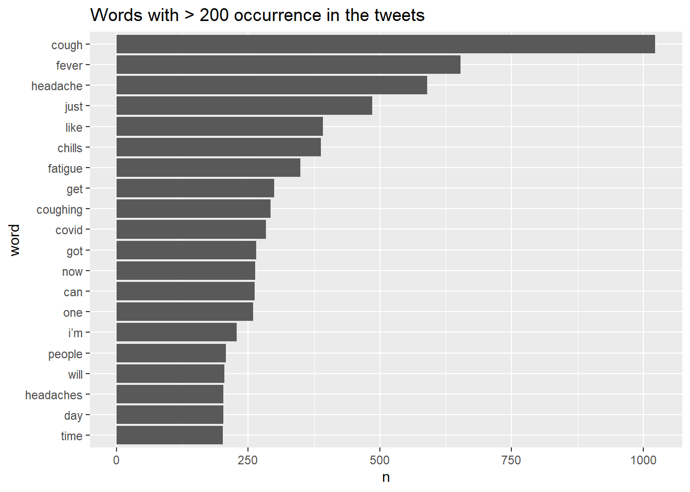
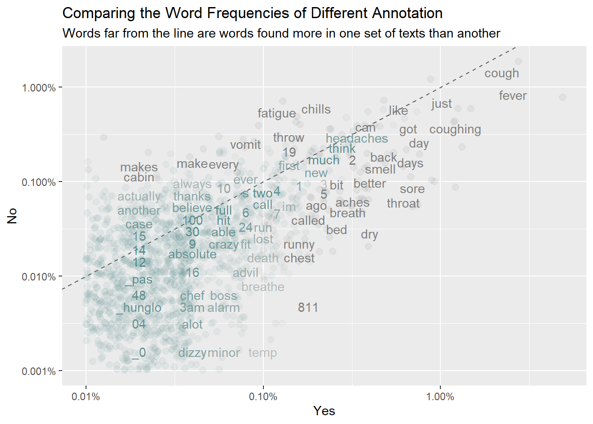
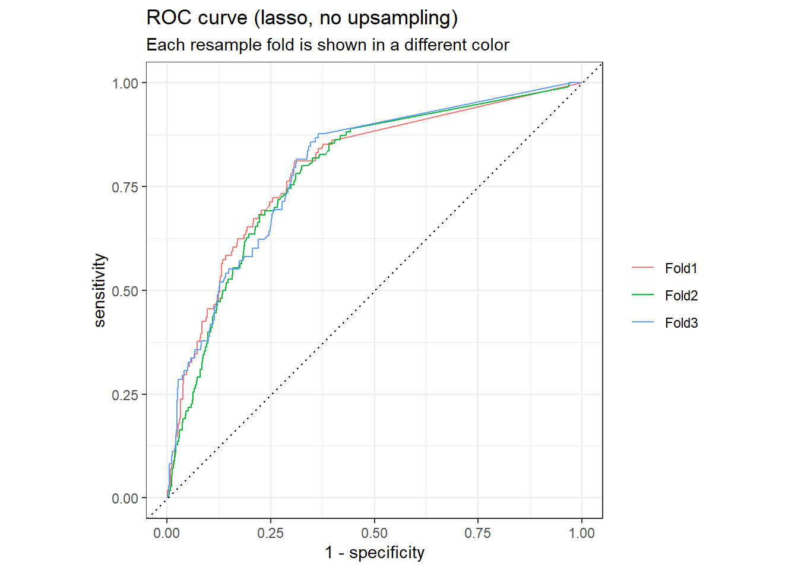
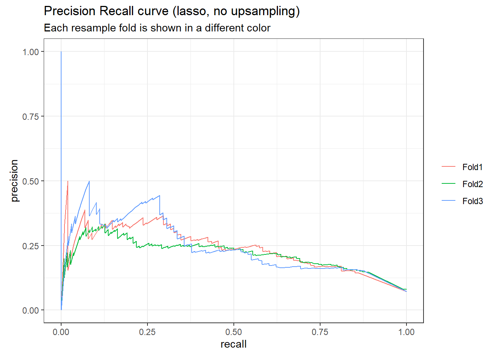
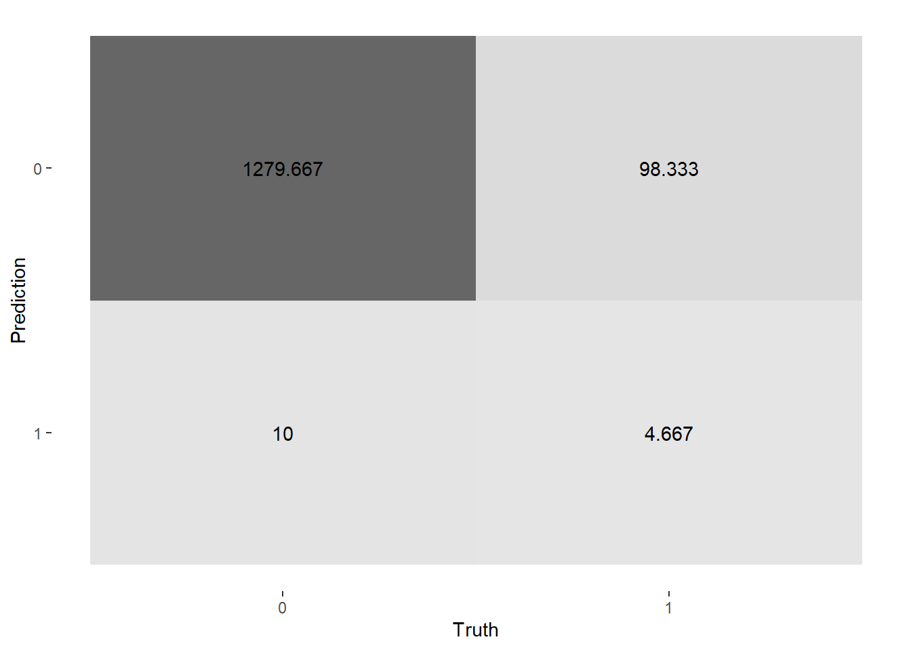
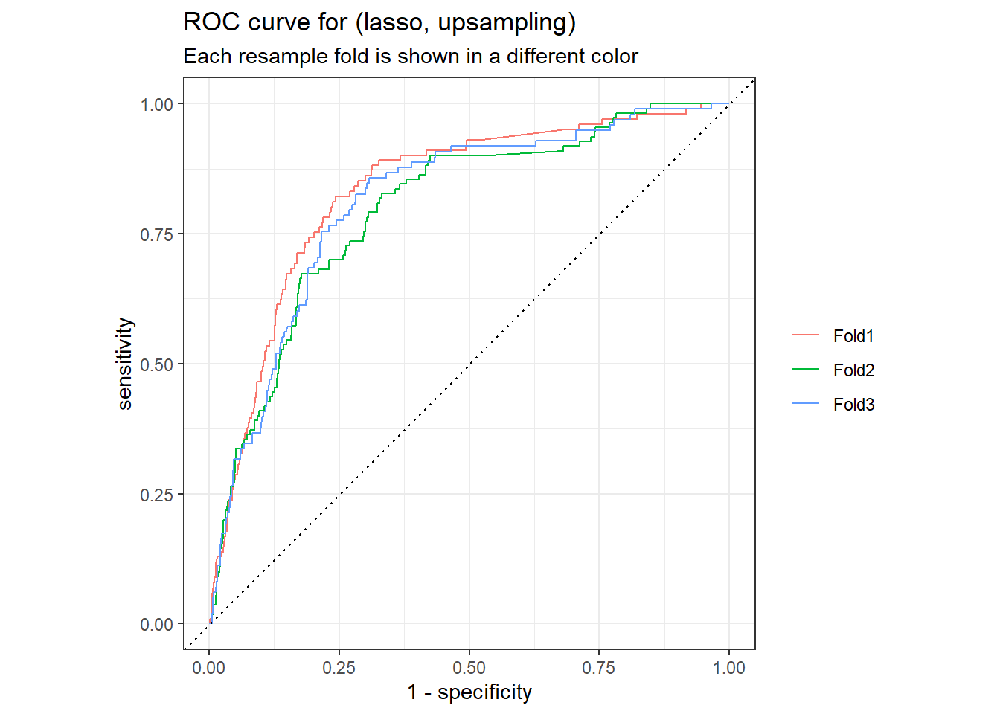
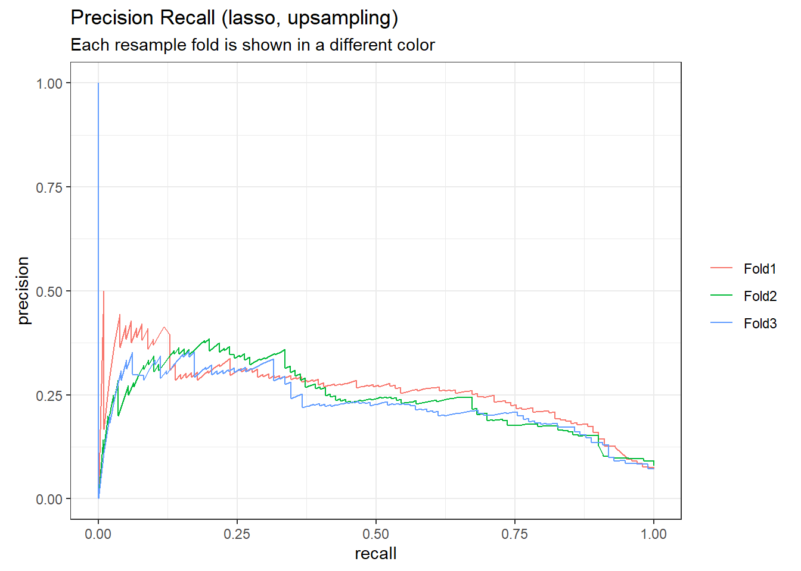
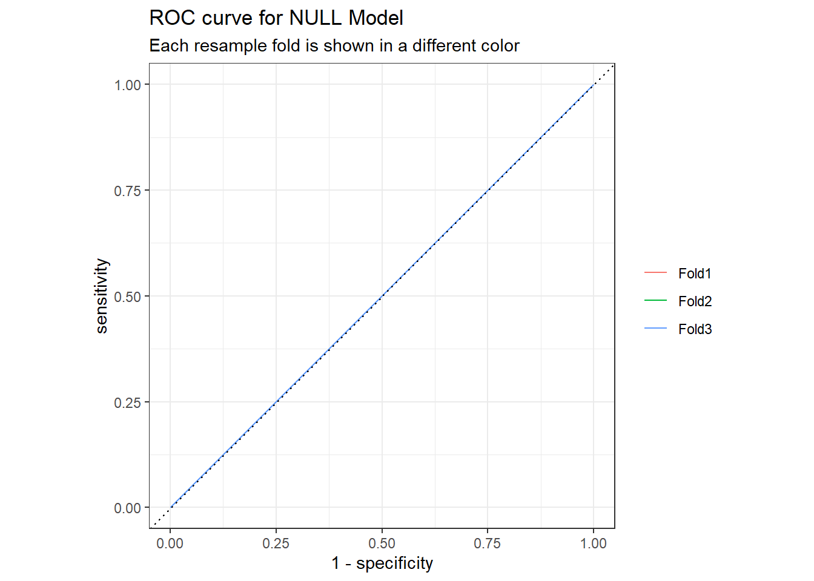
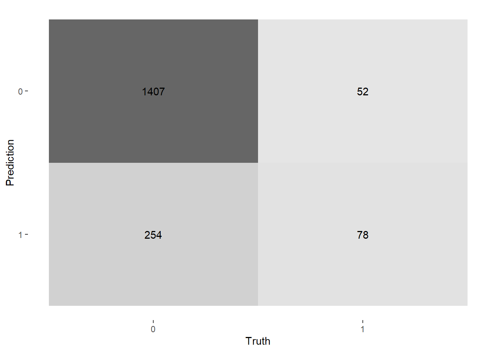
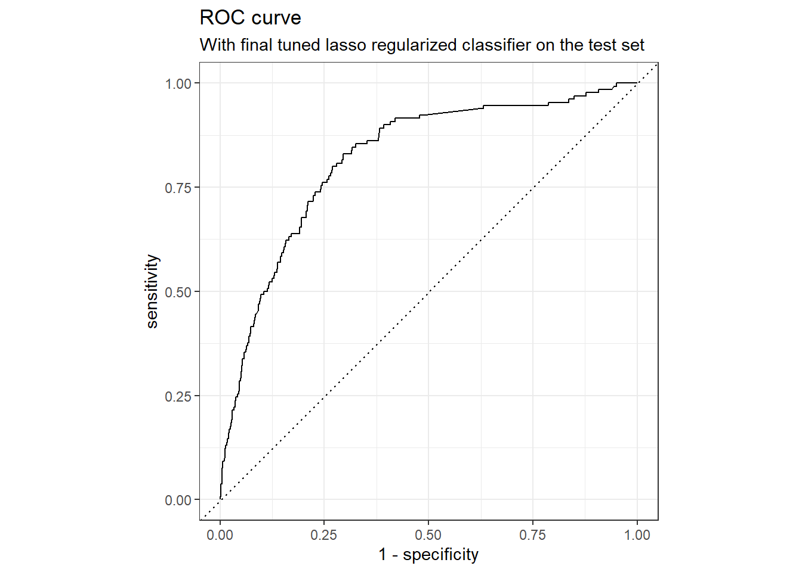

2 Text Analytics with R: Classification
This tutorial introduces text analyses in R using a variety of R packages and tidy tools.
2.1 Initial R Setup
2.1.1 Load the R Packages
Load and import the necessary R packages:
library(readr)
# a collection of package for data wrangling.
library(tidyverse)
# package for text processing
library(tidytext)
# collection of packages for modeling and L
library(tidymodels)
library(scales)
# R package for managing and analyzing textual data
library(quanteda)
# An R package with word stemming algorithm
# collapsing words to a common root to aid comparison of vocabular.
library(SnowballC)
# library for topic models (LDA)
library(topicmodels)
# text recipe
library(textrecipes)
# dealing with imbalance data using `step_downsample or upsample`.
library(themis)
# https://github.com/tidymodels/discrim
library(discrim)
# framework for constructing variable importance plots from ML models
library(vip)2.1.2 Load the Twitter Data for Classification
We will use the Twitter data for classification in this section.
The world is a mix of multiple language. Different languages might be encoded differently. For instance, English is very well encoded using ASCII. ASCII stands for American Standard Code for Information Interchange. But this is not the only standard. Other languages have different encoding standards.
UTF-8, the Unicode Standard, is a variable-width character encoding being used almost exclusively now.
urlfile_class <- "https://raw.githubusercontent.com/tianyuan09/ai4ph2022/main/sampleTwitterDataForClassification.csv"
tweetsDF <- read.csv(url(urlfile_class), encoding = "UTF-8")
colnames(tweetsDF)
## [1] "X.1" "X" "tweet" "annotation"
nrow(tweetsDF) # check the # of rows
## [1] 5969
table(tweetsDF$annotation) # build a contingency table of counts
##
## 0 1
## 5530 439
# print the a few tweets
tweetsDF$tweet[1:3]
## [1] "@sharscott12 Tramidol is mostly for headaches/migraines. So yeah it isn’t overly strong. Oh I was like you. I tried absolutely everything before opioids. So I’m definitely with you to go a route before that."
## [2] "RT @PSilvervoodoos: Playlist Ordinary Man - Ozzy Osbourne by @_CaviarMusic_ @GreenDay @RufuskingBand @ShadowofEverest @gozer_goodspeed @Le…"
## [3] "@JoMichigan1 @TheDailyShow If he's alone in his own house then he's free to cough and touch his face ; so not seeing the issue?"2.2 Data Pre-processing
In this section, you will:
- know how to manipulate text using simple regular expressions
- know how to tokenize text
- know how to remove stop words
- know how to do stemming
2.2.1 Regular Expressions
When you’re processing free-text, we come across a lot of places where regular expressions or patterns play a role. Here are a few examples of using regular expressions with the str_detect(), str_extract() and str_replace() functions.
A typical tweet might have callouts (e.g., @SciFiTV50), hashtags (e.g., #92) and URLs (e.g. https://t.co/7Mo59nwE39). There is a clear pattern for these information in the tweet. We can either remove them or replace them with user-defined patterns.
tweet <- "RT @PurpleForever19 @SciFiTV50 @ufpearth Cool! # #AI4PH #92. #whatif commentary 200 https://t.co/7Mde3"
tweet
## [1] "RT @PurpleForever19 @SciFiTV50 @ufpearth Cool! # #AI4PH #92. #whatif commentary 200 https://t.co/7Mde3"
# check if the text contains a pattern
str_detect(tweet,"@")
## [1] TRUE
# extract the first match with the pattern
# *: zero to many, []: list characters
str_extract(tweet,"#[a-zA-Z0-9]*")
## [1] "#"
# extract all the matches to the pattern
str_extract_all(tweet,"#[a-zA-Z0-9]*")
## [[1]]
## [1] "#" "#AI4PH" "#92" "#whatif"
# replace usernames (starts with @) with empty "".
str_replace_all(tweet, "@[a-z,A-Z]*[0-9]*[a-z,A-Z]*", "USERNAME")
## [1] "RT USERNAME USERNAME USERNAME Cool! # #AI4PH #92. #whatif commentary 200 https://t.co/7Mde3"Suppose that we are not interested in them. We can remove them from tweet text using regular expressions.
Several user-defined functions (UDF) were created to remove this information from the text. In essence, we want to find the patterns that match @, # and https:// in the text, and replace them with '' (blank).
### UDF to remove the URLs from the tweets
removeURLs <- function(tweet) {
return(gsub("http\\S+", "", tweet))
}
tweet # before removal
## [1] "RT @PurpleForever19 @SciFiTV50 @ufpearth Cool! # #AI4PH #92. #whatif commentary 200 https://t.co/7Mde3"
removeURLs(tweet) # after removal
## [1] "RT @PurpleForever19 @SciFiTV50 @ufpearth Cool! # #AI4PH #92. #whatif commentary 200 "
### UDF to remove RT from the tweets
removeUsernamesWithRT <- function(tweet) {
return(gsub("^RT @[a-z,A-Z]*[0-9]*[a-z,A-Z]*[0-9]*: ","", tweet))
}
tweet
## [1] "RT @PurpleForever19 @SciFiTV50 @ufpearth Cool! # #AI4PH #92. #whatif commentary 200 https://t.co/7Mde3"
removeUsernamesWithRT(tweet) # after removal
## [1] "RT @PurpleForever19 @SciFiTV50 @ufpearth Cool! # #AI4PH #92. #whatif commentary 200 https://t.co/7Mde3"
### UDF to remove the usernames or callouts from the tweets
removeUsernames <- function(tweet) {
return(gsub("@[a-z,A-Z]*[0-9]*[a-z,A-Z]*[0-9]*", "", tweet))
}
tweet
## [1] "RT @PurpleForever19 @SciFiTV50 @ufpearth Cool! # #AI4PH #92. #whatif commentary 200 https://t.co/7Mde3"
removeUsernames(tweet)# after removal
## [1] "RT Cool! # #AI4PH #92. #whatif commentary 200 https://t.co/7Mde3"
### remove the hashtag # from the tweets
removeHashtagSignOnly <- function(tweet) {
return(gsub("#", "", tweet))
}
tweet
## [1] "RT @PurpleForever19 @SciFiTV50 @ufpearth Cool! # #AI4PH #92. #whatif commentary 200 https://t.co/7Mde3"
removeHashtagSignOnly(tweet)
## [1] "RT @PurpleForever19 @SciFiTV50 @ufpearth Cool! AI4PH 92. whatif commentary 200 https://t.co/7Mde3"We clean our raw tweet data by applying the UDFs on the tweet column.
### Remove the URLs and usernames from the tweets
tweetsDF$processed_tweet <- apply(tweetsDF['tweet'], 2, removeURLs)
tweetsDF$processed_tweet <- apply(tweetsDF['processed_tweet'],2, removeUsernamesWithRT)
tweetsDF$processed_tweet <- apply(tweetsDF['processed_tweet'],2, removeUsernames)
tweetsDF$processed_tweet <- apply(tweetsDF['processed_tweet'],2, removeHashtagSignOnly)2.2.2 Tokenization
What is a token?
A token is a meaningful piece of text, usually a word, that we want to use for further analysis. Tokenization is the process of breaking a piece of text into tokens.
Since each tweet made up of multiple words, we need to convert it into one-token-per-tweet-per-row format.
The two basic arguments to unnest_tokensused here are column names. word is the outcome column, tweet is the input column (the text column in the dataset)
text_df <- tweetsDF %>%
select(X,annotation,processed_tweet) %>%
unnest_tokens(word, processed_tweet)
nrow(text_df)
## [1] 94599
tweetsDF$processed_tweet[1]
## [1] " Tramidol is mostly for headaches/migraines. So yeah it isn’t overly strong. Oh I was like you. I tried absolutely everything before opioids. So I’m definitely with you to go a route before that."
head(text_df,10) # take a look at the first 10 rows.
## X annotation word
## 1 1 0 tramidol
## 2 1 0 is
## 3 1 0 mostly
## 4 1 0 for
## 5 1 0 headaches
## 6 1 0 migraines
## 7 1 0 so
## 8 1 0 yeah
## 9 1 0 it
## 10 1 0 isn’t2.2.3 Stop Words
Stop words are common words that are not useful for text analysis, such as “the,” “of,” “to” and so on in English. We often want to delete stop words in text analysis.
The stop_words dataset in the tidytext package contains stop words from three lexicons. The intersections between different lexicons can be found in here. We can use them all together, or use filter() to only use one set of stop words.
# take a look at the stop words
data(stop_words)
# different lexicons
unique(stop_words$lexicon)
## [1] "SMART" "snowball" "onix"
# count of words for each lexicon
table(stop_words$lexicon)
##
## onix SMART snowball
## 404 571 174
# take a look at the stop words in snowball
head(stop_words[stop_words$lexicon == "snowball",],15)
## # A tibble: 15 × 2
## word lexicon
## <chr> <chr>
## 1 i snowball
## 2 me snowball
## 3 my snowball
## 4 myself snowball
## 5 we snowball
## 6 our snowball
## 7 ours snowball
## 8 ourselves snowball
## 9 you snowball
## 10 your snowball
## 11 yours snowball
## 12 yourself snowball
## 13 yourselves snowball
## 14 he snowball
## 15 him snowballRemove the stop words from the tweets using snowball. The number of tokens decreased significantly.
nrow(text_df)# count before removal
## [1] 94599
text_df <- text_df %>%
anti_join(stop_words[stop_words$lexicon == "snowball",], by = "word")
nrow(text_df) # count after removal
## [1] 549212.2.4 Stemming
When we deal with text, often documents contain different versions of one base word, often called a stem. For example, the word “running” can be both “run” and “ran.” Over the last half-century, various algorithms for stemming words have been developed.
Stemming is frequently used in NLP pipelines, sometimes without any discussion of whether it is useful or not. We advise you to consider stemming as a preprocessing step in text modelling, one that must be carefully considered and chosen (or not).
Why does stemming frequently used when developing a machine learning model for text? It helps reduce the feature space of the text data. A common data structure for modeling is a matrix, more words mean higher sparsity of the data matrix.
We used the wordStem() function in the SnowballC library to stem the words. The Unique words dropped after stemming.
# unique count of words before stemming
text_df %>%
count(word, sort = TRUE)%>%
nrow()
## [1] 11400
# stemming
text_df = text_df %>%
mutate(stem = wordStem(word))
# unique count of words after stemming
text_df %>%
count(stem, sort = TRUE) %>%
nrow()
## [1] 88932.2.5 Exporatory Data Analysis
Take a look at the most common words in the dataset.
text_df %>% group_by(word) %>%
summarise(count = n()) %>%
arrange(desc(count)) %>%
head(10)
## # A tibble: 10 × 2
## word count
## <chr> <int>
## 1 cough 1023
## 2 fever 653
## 3 headache 590
## 4 just 485
## 5 like 392
## 6 chills 388
## 7 fatigue 349
## 8 get 299
## 9 coughing 292
## 10 covid 284
text_df %>% group_by(stem) %>%
summarise(count = n()) %>%
arrange(desc(count)) %>%
head(10)
## # A tibble: 10 × 2
## stem count
## <chr> <int>
## 1 cough 1467
## 2 headach 795
## 3 fever 670
## 4 just 485
## 5 like 421
## 6 fatigu 410
## 7 get 410
## 8 chill 402
## 9 dai 338
## 10 covid 284Create a bar chart displaying the words with > 200 occurrence in the tweets.
text_df %>% count(word, sort =TRUE) %>%
filter(n > 200) %>%
mutate(word = reorder(word,n)) %>%
ggplot(aes(x = n, y = word)) + geom_col() +
labs(title = "Words with > 200 occurrence in the tweets")
Compare the word frequencies with different annotation. Annotation is the outcome of interest.
frequency <- text_df %>% count(annotation, word) %>% group_by(annotation) %>%
mutate(proportion = n / sum(n)) %>% select(-n) %>%
pivot_wider(names_from = annotation, values_from = proportion) %>%
rename(No = `0`) %>%
pivot_longer(3,names_to ="Yes",values_to = "proportion")
# expect a warning about rows with missing values being removed
ggplot(frequency, aes(x = proportion, y = No,color = abs(No - proportion)))+
geom_abline(color = "gray40", lty = 2) +
geom_jitter(alpha = 0.1, size = 2.5, width = 0.3, height = 0.3) +
geom_text(aes(label = word), check_overlap = TRUE, vjust = 1.5) +
scale_x_log10(labels = percent_format()) +
scale_y_log10(labels = percent_format()) +
scale_color_gradient(limits = c(0, 0.001),
low = "darkslategray4", high = "gray75") +
theme(legend.position = "none") +
labs(y = "No", x = "Yes", title = "Comparing the Word Frequencies of Different Annotation", subtitle = "Words far from the line are words found more in one set of texts than another")
Words that are close to the line in these plots have similar frequencies in both sets of texts. Words that are far from the line are words that are found more in one set of texts than another.
We can quantify how similar (or different) the set of word frequencies using a correlation test
cor.test(data = frequency[frequency$Yes == 1,], ~ proportion + `No`)
##
## Pearson's product-moment correlation
##
## data: proportion and No
## t = 51.611, df = 1350, p-value < 2.2e-16
## alternative hypothesis: true correlation is not equal to 0
## 95 percent confidence interval:
## 0.7959026 0.8318336
## sample estimates:
## cor
## 0.81464842.3 Classification Models
Most supervised models for text data are built with one of three purposes in mind:
- predictive model: generate the most accurate predictions possible.
- inferential model: hypothesis testing or draw a conclusion about a population.
- descriptive model: describe the properties of the observed data.
We will use the tidymodels framework for this tutorial.
The
tidymodelsframework(Kuhn and Wickham 2021a) is a collection of R packages for modeling and machine learning usingtidyverseprinciples (Wickham et al. 2019).
Depending on the outcome of interest:
- A classification model predicts a class label or group membership.
- A regression model predicts a numeric or continuous value.
We will use classification model for this tutorial, as our outcome is a binary class label.
2.3.1 Split the Training and Test Set
It is normal practice to split an existing data set into two subsets, the training and test sets. For the most part, we use the training set for model development, feature engineering, and so on.
We made use of the initial_split() function in the rsample package. We will create a factor outcome variable with two levels.
# Resolve conflicts between tidymodels packages and others
tidymodels_prefer()
tweetsDF2class <- tweetsDF %>%
mutate(outcome = factor(annotation)) %>%
arrange(desc(outcome))
# default 3/4 for training and 1/4 for testing
# use `strata` argument to specify stratified random sampling.
# use `set.seed()` to reproduce the results later.
set.seed(123)
tweet_df_split <- tweetsDF2class %>% initial_split(0.7, strata = outcome)
# the training set
tweet_df_train <- training(tweet_df_split)
table(tweet_df_train$outcome)
##
## 0 1
## 3869 309
# the test set
tweet_df_test <- testing(tweet_df_split)
table(tweet_df_test$outcome)
##
## 0 1
## 1661 130
tweet_df_split
## <Training/Testing/Total>
## <4178/1791/5969>2.3.2 Pre-processing with the recipe()
A recipe is a powerful preprocessor for modelling, and can be added to a workflow pipeline.
Our recipe is the plan of action, add step_*() to our recipe.
Specify the model form in the the recipe() statement with the formula. Then tokenize the text of the tweets.
The recipe step step_tfidf() weights each token frequency by inverse document frequency (IDF). As the preprocessing might be model dependent, so you can create different recipes.
tweet_rec <-recipe(outcome ~ processed_tweet, data = tweet_df_train) %>%
step_tokenize(processed_tweet) %>% # tokenization
step_stopwords(processed_tweet)%>% # stopwords removal
step_stem(processed_tweet) %>% #stem
step_tokenfilter(processed_tweet, max_tokens = 1e3) %>% # select tokens
step_tfidf(processed_tweet) # convert to tf-idf
tweet_rec # a recipe
## Recipe
##
## Inputs:
##
## role #variables
## outcome 1
## predictor 1
##
## Operations:
##
## Tokenization for processed_tweet
## Stop word removal for processed_tweet
## Stemming for processed_tweet
## Text filtering for processed_tweet
## Term frequency-inverse document frequency with processed_tweetIn case there is significant imbalance between the classes, we can address it during data preprocessing using the themis package. You can add step_downsample() or stemp_upsample() in the recipe specification to deal with the issue.
table(tweet_df_train$outcome) # 7.4% of tweets are labeled as “1”.
##
## 0 1
## 3869 309
tweet_upsample_rec <- recipe(outcome ~ processed_tweet,
data = tweet_df_train) %>%
step_tokenize(processed_tweet) %>%
step_stopwords(processed_tweet)%>%
step_stem(processed_tweet) %>%
step_tokenfilter(processed_tweet, max_tokens = 1e3) %>%
step_tfidf(processed_tweet) %>%
step_upsample(outcome, over_ratio = 1)
tweet_upsample_rec # a recipe with upsample
## Recipe
##
## Inputs:
##
## role #variables
## outcome 1
## predictor 1
##
## Operations:
##
## Tokenization for processed_tweet
## Stop word removal for processed_tweet
## Stemming for processed_tweet
## Text filtering for processed_tweet
## Term frequency-inverse document frequency with processed_tweet
## Up-sampling based on outcome2.3.3 Choose a Classification Model
Choose a classification model using the parsnip package, find a classification model https://www.tidymodels.org/find/parsnip/
We demonstrate a naive Bayes model and Lasso Regularized Generalized Linear Models (GLMs) for the classification task.
Naive Bayes model can handle a large number of features quite well. We will kept the 1000 most frequent tokens for now. We use the the naive Bayes model from the
discrimpackage.Regularized linear models are often used and are workhorse in real-world practice.
# Naive Bayes model
# the engine usually refers a R model package
nb_spec <- naive_Bayes() %>%
set_mode("classification") %>%
set_engine("naivebayes")
nb_spec
## Naive Bayes Model Specification (classification)
##
## Computational engine: naivebayes
# Regularized linear models
# you can tune the parameters, but we will start from these values.
lasso_spec <- logistic_reg(penalty = 0.01, mixture = 1) %>%
set_mode("classification") %>%
set_engine("glmnet")
lasso_spec
## Logistic Regression Model Specification (classification)
##
## Main Arguments:
## penalty = 0.01
## mixture = 1
##
## Computational engine: glmnet2.3.4 The workflow() for bundling recipe() and models
The workflows package easily allow users to bind preprocessing objects with modelling together. A workflow requires a parsnip model object.
In tidymodels, the workflows package (Vaughan 2021b) offers infrastructure for bundling model components. A model workflow is a convenient way to combine different modeling components (a preprocessor plus a model specification); when these are bundled explicitly, it can be easier to keep track of your modeling plan, as well as fit your model and predict on new data. (Hvitfeldt and Silge 2022)
A workflow can have the following components:
- a
receipe()with formula and pre-process. - a model specification,
add_model() - a training dataset, e.g.
fit(data=training)
Let’s add the recipe and the model to the workflow.
# create workf lo
nb_wf = workflow() %>%
add_recipe(tweet_rec)%>%
add_model(nb_spec)
nb_wf
## ══ Workflow ════════════════════════════════════════════════════════════════════
## Preprocessor: Recipe
## Model: naive_Bayes()
##
## ── Preprocessor ────────────────────────────────────────────────────────────────
## 5 Recipe Steps
##
## • step_tokenize()
## • step_stopwords()
## • step_stem()
## • step_tokenfilter()
## • step_tfidf()
##
## ── Model ───────────────────────────────────────────────────────────────────────
## Naive Bayes Model Specification (classification)
##
## Computational engine: naivebayes
# workflow with upsampling pre-processing
lasso_wf = workflow() %>%
add_recipe(tweet_rec)%>%
add_model(lasso_spec)
lasso_wf
## ══ Workflow ════════════════════════════════════════════════════════════════════
## Preprocessor: Recipe
## Model: logistic_reg()
##
## ── Preprocessor ────────────────────────────────────────────────────────────────
## 5 Recipe Steps
##
## • step_tokenize()
## • step_stopwords()
## • step_stem()
## • step_tokenfilter()
## • step_tfidf()
##
## ── Model ───────────────────────────────────────────────────────────────────────
## Logistic Regression Model Specification (classification)
##
## Main Arguments:
## penalty = 0.01
## mixture = 1
##
## Computational engine: glmnetCreate a workflow(), then add_recipe() and add_model() to fit() the training data as a whole and predict().
# it takes a long time to finish
nb_fit <- workflow() %>%
add_recipe(tweet_rec)%>%
add_model(nb_spec) %>%
fit(data = tweet_df_train)
# predict() on the fitted workflow
predict(nb_fit, tweet_df_test %>% slice(1:5))
lasso_fit <- workflow() %>%
add_recipe(tweet_rec)%>%
add_model(lasso_spec) %>%
fit(data = tweet_df_train)we fit one time to the training data as a whole, but often this is not enough. We need to evaluate our model or tune the parameters to find models with better performance.
2.3.5 Model Evaluation
When comparing models or model parameters, we should not use the test set for this purpose. After the model has been trained, the test set should only be used to estimate how well the model will perform on new data. Resampling approaches should be used for model evaluation. We can resample data sets built from the training set by creating n-fold cross-validation sets.
Let’s create a 3-fold cross-validation set.
# create a 3-fold cross-validation set.
set.seed(123)
tweet_folds <- vfold_cv(tweet_df_train, v = 3)
tweet_folds
## # 3-fold cross-validation
## # A tibble: 3 × 2
## splits id
## <list> <chr>
## 1 <split [2785/1393]> Fold1
## 2 <split [2785/1393]> Fold2
## 3 <split [2786/1392]> Fold3Using lasso classification model for demonstration, suppose we want to compare model performance (with or without up-sampling). Create our workflows for different pre-processing (with or without up-sampling)
# create two workflow with different recipes
lasso_wf <- workflow() %>%
add_recipe(tweet_rec) %>%
add_model(lasso_spec)
lasso_wf
## ══ Workflow ════════════════════════════════════════════════════════════════════
## Preprocessor: Recipe
## Model: logistic_reg()
##
## ── Preprocessor ────────────────────────────────────────────────────────────────
## 5 Recipe Steps
##
## • step_tokenize()
## • step_stopwords()
## • step_stem()
## • step_tokenfilter()
## • step_tfidf()
##
## ── Model ───────────────────────────────────────────────────────────────────────
## Logistic Regression Model Specification (classification)
##
## Main Arguments:
## penalty = 0.01
## mixture = 1
##
## Computational engine: glmnet
lasso_upsample_wf <- workflow() %>%
add_recipe(tweet_upsample_rec) %>%
add_model(lasso_spec)
lasso_upsample_wf
## ══ Workflow ════════════════════════════════════════════════════════════════════
## Preprocessor: Recipe
## Model: logistic_reg()
##
## ── Preprocessor ────────────────────────────────────────────────────────────────
## 6 Recipe Steps
##
## • step_tokenize()
## • step_stopwords()
## • step_stem()
## • step_tokenfilter()
## • step_tfidf()
## • step_upsample()
##
## ── Model ───────────────────────────────────────────────────────────────────────
## Logistic Regression Model Specification (classification)
##
## Main Arguments:
## penalty = 0.01
## mixture = 1
##
## Computational engine: glmnetWe fit the model multiple times, once to each of these re-sampled folds, and then evaluate on the left part for each re-sampled fold.
This also takes a long time to finish.
# without upsampling (imbalanced data)
set.seed(123)
lasso_rs <- fit_resamples(
lasso_wf,
tweet_folds,
control = control_resamples(save_pred = TRUE))
# with upsampling
set.seed(123)
lasso_upsample_rs <- fit_resamples(
lasso_upsample_wf,
tweet_folds,
control = control_resamples(save_pred = TRUE))2.3.5.1 Accuracy and ROC AUC
The default performance measures for binary classification are accuracy and ROC AUC (area under the receiver operator characteristic curve).
Accuracy and ROC AUC are performance metrics used for classification models. For both, values closer to 1 are better. Accuracy is the proportion of the data that is predicted correctly. Be aware that accuracy can be misleading in some situations, such as for imbalanced data sets.ROC AUC measures how well a classifier performs at different thresholds. The ROC curve plots the true positive rate against the false positive rate; AUC closer to 1 indicates a better-performing model, while AUC closer to 0.5 indicates a model that does no better than random guessing.(Hvitfeldt and Silge 2022)
lasso_rs_metrics <- collect_metrics(lasso_rs)
lasso_rs_predictions <- collect_predictions(lasso_rs)
lasso_rs_metrics
## # A tibble: 2 × 6
## .metric .estimator mean n std_err .config
## <chr> <chr> <dbl> <int> <dbl> <chr>
## 1 accuracy binary 0.922 3 0.00334 Preprocessor1_Model1
## 2 roc_auc binary 0.793 3 0.00329 Preprocessor1_Model1
# plot the roc curve
lasso_rs_predictions %>%
group_by(id) %>%
roc_curve(truth = outcome, .pred_1, event_level = "second") %>%
autoplot() +
labs(
color = NULL,
title = "ROC curve (lasso, no upsampling)",
subtitle = "Each resample fold is shown in a different color"
)
# plot the precision-recall curve
lasso_rs_predictions %>%
group_by(id) %>%
pr_curve(truth = outcome, .pred_1, event_level = "second") %>%
autoplot()+
labs(
color = NULL,
title = "Precision Recall curve (lasso, no upsampling)",
subtitle = "Each resample fold is shown in a different color"
)
# confusion matrix
conf_mat_resampled(lasso_rs, tidy = FALSE) %>%
autoplot(type = "heatmap")
lasso_up_rs_metrics <- collect_metrics(lasso_upsample_rs)
lasso_up_rs_predictions <- collect_predictions(lasso_upsample_rs)
lasso_up_rs_metrics
## # A tibble: 2 × 6
## .metric .estimator mean n std_err .config
## <chr> <chr> <dbl> <int> <dbl> <chr>
## 1 accuracy binary 0.835 3 0.00569 Preprocessor1_Model1
## 2 roc_auc binary 0.815 3 0.0102 Preprocessor1_Model1
# plot the roc curve
lasso_up_rs_predictions %>%
group_by(id) %>%
roc_curve(truth = outcome, .pred_1, event_level = "second") %>%
autoplot() +
labs(
color = NULL,
title = "ROC curve for (lasso, upsampling)",
subtitle = "Each resample fold is shown in a different color"
)
# plot the precision-recall curve
lasso_up_rs_predictions %>%
group_by(id) %>%
pr_curve(truth = outcome, .pred_1, event_level = "second") %>%
autoplot()+
labs(
color = NULL,
title = "Precision Recall (lasso, upsampling)",
subtitle = "Each resample fold is shown in a different color"
)
# confusion matrix
conf_mat_resampled(lasso_upsample_rs, tidy = FALSE) %>%
autoplot(type = "heatmap")The lasso classification model with upsampling give us better model performance in terms of ROC AUC.
2.3.5.2 Compare to the a NULL model
We can assess a model by comparing its performance with a “null model” or baseline model.
null_classification <- null_model() %>%
set_engine("parsnip") %>%
set_mode("classification")
null_rs <- workflow() %>%
add_recipe(tweet_rec) %>%
add_model(null_classification) %>%
fit_resamples(
tweet_folds,control = control_resamples(save_pred = TRUE)
)
null_rs %>%
collect_metrics()
## # A tibble: 2 × 6
## .metric .estimator mean n std_err .config
## <chr> <chr> <dbl> <int> <dbl> <chr>
## 1 accuracy binary 0.926 3 0.00258 Preprocessor1_Model1
## 2 roc_auc binary 0.5 3 0 Preprocessor1_Model1
null_rs %>%
collect_predictions() %>%
group_by(id) %>%
roc_curve(truth = outcome,.pred_1,event_level = "second") %>%
autoplot() +
labs(
color = NULL,
title = "ROC curve for NULL Model",
subtitle = "Each resample fold is shown in a different color"
)
2.3.6 Evaluate on the Testing Set (Optional)
Suppose we are done, we want to fit this workflow on training data, and evaluate it on our testing data. We pass the last_fit() function two parameters: our finalized workflow and our data split.
final_wf <- last_fit(lasso_upsample_wf, tweet_df_split)
collect_metrics(final_wf)
## # A tibble: 2 × 4
## .metric .estimator .estimate .config
## <chr> <chr> <dbl> <chr>
## 1 accuracy binary 0.829 Preprocessor1_Model1
## 2 roc_auc binary 0.818 Preprocessor1_Model1The confusion matrix on the testing data.
# plot the confusion matrix
collect_predictions(final_wf) %>%
conf_mat(truth = outcome, estimate = .pred_class) %>%
autoplot(type = "heatmap")
ROC curve for the testing set.
collect_predictions(final_wf) %>%
roc_curve(truth = outcome, .pred_1, event_level = "second") %>%
autoplot() +
labs(
color = NULL,
title = "ROC curve",
subtitle = "With final tuned lasso regularized classifier on the test set"
)
Understand the most important variables in the predictions.
We can use the vip package to understand what the most important variables are in the predictions.
library(vip)
tidymodels_prefer()
final_imp <- extract_fit_parsnip(final_wf$.workflow[[1]]) %>%
vip::vi()
final_imp%>%filter(Sign == "POS") %>% arrange(desc(Importance)) %>% head(10)
final_imp %>%
mutate(
Sign = case_when(Sign == "POS" ~ "More about Plausible Covid-19 Cases",
Sign == "NEG" ~ "Less about Plausible Covid-19 Cases"),
Importance = abs(Importance),
Variable = str_remove_all(Variable, "tfidf_processed_tweet_"),
Variable = str_remove_all(Variable, "textfeature_narrative_copy_")
) %>%
group_by(Sign) %>%
top_n(20, Importance) %>%
ungroup %>%
ggplot(aes(x = Importance,
y = fct_reorder(Variable, Importance),
fill = Sign)) +
geom_col(show.legend = FALSE) +
scale_x_continuous(expand = c(0, 0)) +
facet_wrap(~Sign, scales = "free") +
labs(
y = NULL,
title = "Variable importance for predicting Plausible COVID-19 Cases",
subtitle = paste0("These features are the most important in predicting\n",
"whether a tweet is about Plausible COVID-19 Cases or not")
)